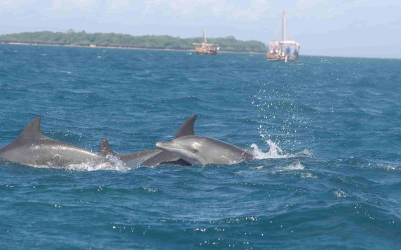

About an hour south of Mombasa, the sparkling white sands and lush greenery of Diani invite you to relax under a beach umbrella with a refreshing drink. Try a camel ride for the tourist experience or book a bike tour inland for a glimpse of life in local villages. Diani is also a base for several safari companies.
Time trip in Mombasa's Old Town-Founded in the 14th century by Swahili sultans, Kenya's big port was later a Portuguese and British colonial bastion.
The Old Town retains its bygone ways, means and architecture, a warren of narrow streets flanked by mosques, coffee houses and homes with massive wooden doors -- 16th-century Fort Jesus looming over all.